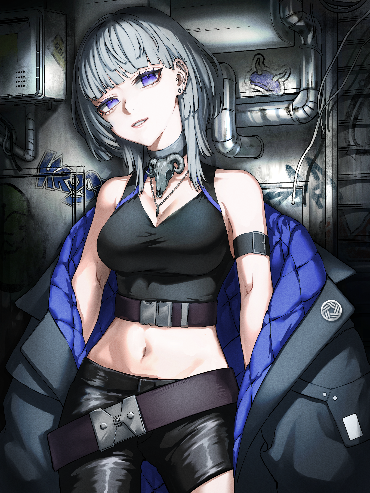

VTuber / Voice Actor
靑山羊くろすけ
AOYAGI KUROSUKE
「くすっと笑えるような幸せの時間を声でお届けしたい靑い山羊です！」
StudioAmpersand所属のVTuber／ボイスキャスト。シチュエーションボイスや音声作品を中心に、YouTubeでの定期配信でも活動中。落ち着きのあるトーンから距離感の近いナチュラルな演技まで幅広く対応可能です。
VOICE SAMPLE / ボイスサンプル
01. 自己紹介・フリートーク
02. シチュエーションセリフ
PROFILE DATA
- 誕生日
- 9月6日
- 好き・特技
- 歌・ゲーム・映画・ものづくり
- 総合・配信タグ
- #ヤギのおもてなし
- ファンアートタグ
- #あおやぎアート
- キャラクターデザイン・イラストレーター
- 空地 様 X (Twitter) ↗
Discography & Achievements
ピックアップ作品・実績
このタレントへのお仕事・コラボのご依頼
PR配信、音声収録（CV・ナレーション）、イベント出演等のご相談はStudioAmpersand総合窓口にて承っております。
お問い合わせフォームへ進む →